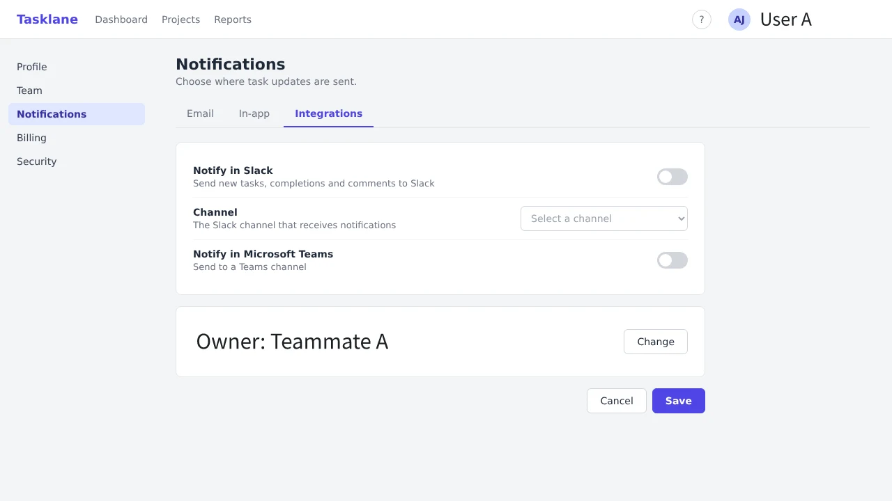
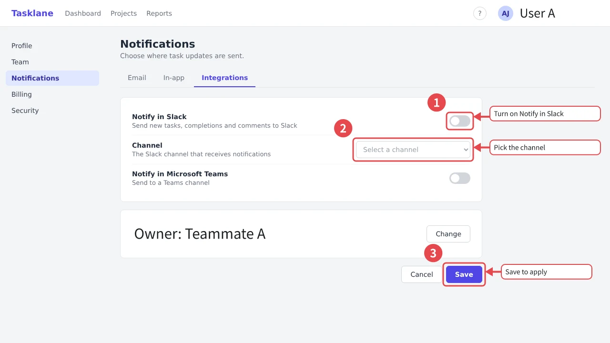
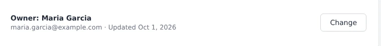
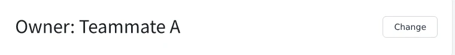

建议的标注
输入类似“说明如何设置 Slack 通知”的内容，AI 就会起草方框的位置和说明文字。每条建议都可以采纳、拒绝或修改。如果是 Chrome 扩展截取的截图，方框会对齐页面上实际的元素。
可以通过 OpenRouter 连接，或使用你自己的 Anthropic API 密钥。Harie 发送图片前一定会先征得同意，密钥也不会离开这个浏览器。
写帮助文档的人
给指南用的截图加上方框、编号和说明。Harie 保存为普通的 JPEG 或 PNG，粘贴到哪里都可以。之后在 Harie 中打开，每个方框和说明都还能修改。
免费开源（MIT），源码公开在 GitHub。浏览器版无需安装和账号，编辑器支持简体中文、繁体中文、英语、日语、韩语、西班牙语和葡萄牙语共七种语言。


而且团队里每个人的做法都不太一样。
由 AI 起草方框的位置和说明文字截图、打开、标注、导出，下一张再从头来一遍。
截取页面后马上就能标注按钮名称一改，截图就得从头再做。如果是同事做的，源文件可能早就找不到了。
打开图片，谁都能当场修改生产环境的画面里满是真实的姓名和邮箱地址。
替换成无法还原的虚拟数据从第一次截图到最终保存，Harie 全部搞定。
用 Chrome 扩展可以截取当前页面并直接在编辑器中打开。可以选择可见区域、拖动选取的范围，或按钮这样的单个元素。
用方框、箭头、编号、标注框和聚光灯来说明。告诉 Harie 你想说明什么，AI 就会帮你起草带编号的方框和说明文字。
Harie 保存为普通的 JPEG 或 PNG。可以直接粘贴到帮助中心，之后打开它的人也还能编辑标注。
打开截图并画好方框后，点击“加上编号和说明框”，即可一次加上编号和说明框。之后只需输入说明框的文字。
打开用 Harie 保存的图片，方框和说明框会原样回来。界面文案变了时，双击说明框修改后再保存即可。
选中姓名或邮箱地址，替换成假数据。页面的样子保持不变，读者依然看得懂那是什么，原始值也不会留在图片里。
为什么还能编辑
用 Harie 保存的图片，除了你看到的画面，还带着原始截图和标注数据。其他应用和浏览器只会把它当作普通图片显示。
用 Harie 打开，就能移动或改写每个方框和说明。不需要另外保留项目文件，收到图片的人也能打开并修改。
再次保存时不会重新压缩原始截图，所以无论修改多少次，画质都不会下降。 文件格式规范 已公开（日文）。
| 用图片编辑软件导出 | 指南制作服务 | Harie | |
|---|---|---|---|
| 直接粘贴到帮助中心 | 可以 | 从服务中导出 | 可以 |
| 发布后修改文字 | 要还留着项目文件 | 在服务内 | 可以，打开图片即可 |
| 制作者以外的人也能修改 | 要把项目文件交给对方 | 同一套餐的成员 | 可以，发送图片即可 |
| 不需要账号或订阅 | 取决于工具 | 需要 | 可以 |
AI
输入类似“说明如何设置 Slack 通知”的内容，AI 就会起草方框的位置和说明文字。每条建议都可以采纳、拒绝或修改。如果是 Chrome 扩展截取的截图，方框会对齐页面上实际的元素。
可以通过 OpenRouter 连接，或使用你自己的 Anthropic API 密钥。Harie 发送图片前一定会先征得同意，密钥也不会离开这个浏览器。
注册 @harie/mcp 服务器后，就能让 Claude Code 或 Claude Desktop 帮你添加或修改标注。界面文字改了的时候，还能一次性更新所有相关图片。
把 guides 里通知图片中的“保存后生效”改成“更新后生效”
harie_open → harie_edit
已修改标注框 3 并保存文件。
个人信息
把姓名、邮箱地址和电话号码替换成虚拟数据。和模糊处理不同，读者仍然能看出这是什么样的画面。也可以选择填充、马赛克或模糊。
遮盖会直接作用于原始图片，无法撤销。也正因为如此，分享文件时原来的信息不会跟着传出去。


无论保存在哪里，都是同一个文件、同样的效果。
直接在浏览器中使用，无需安装。图片在浏览器中处理，不会上传到服务器，离线也能用。界面语言可以在设置中切换。
打开编辑器截取当前页面，马上就能标注。可从 Chrome 应用商店安装。
在 Chrome 应用商店查看适用于 macOS 和 Windows。通过系统对话框打开文件，并直接保存回原处。
关于桌面版让 Claude 这样的 AI 智能体读写你指定文件夹里的图片。
设置方法开始使用 MCP
注册 @harie/mcp 服务器后，Claude Code、Claude Desktop 和 ChatGPT 桌面应用就能打开 Harie 图片，添加或修改标注。
在终端中运行这条命令。
claude mcp add harie -- npx -y @harie/mcp --root ~/Pictures/guides
把这段配置添加到 claude_desktop_config.json ，然后重启 Claude Desktop。请把文件夹换成你自己的路径。
{
"mcpServers": {
"harie": {
"command": "npx",
"args": ["-y", "@harie/mcp", "--root", "/Users/you/Pictures/guides"]
}
}
}
可在 ChatGPT 桌面应用中使用。把这段配置添加到 ~/.codex/config.toml ，然后重启应用。这份配置也由 Codex CLI 和 IDE 扩展共用。也可以在应用设置的 MCP 服务器页面，把同一条命令添加为 STDIO 服务器。
[mcp_servers.harie] command = "npx" args = ["-y", "@harie/mcp", "--root", "/Users/you/Pictures/guides"]
网页版 ChatGPT 无法连接到在你电脑上运行的 MCP 服务器。
npx运行，不需要另外安装。--root 指定存放图片的文件夹。服务器只能在这个文件夹内读写。把 settings.png 转成 Harie 文件，给“保存”按钮加上红框，并添加写着“在这里保存”的标注框
把 guides 里图片中能看到的邮箱地址替换成虚拟数据
遮盖个人信息无法撤销，所以服务器会在你确认后才保存。
Harie 是一款给 SaaS 帮助文档和使用指南的截图加上方框、编号、标注框和箭头的工具。它保存为普通的 JPEG 或 PNG，在 Harie 中重新打开这张图片时，所有标注仍然可以编辑。
可以。Harie 保存的是普通的 JPEG 或 PNG，可以直接粘贴到帮助页面、聊天或文档中。原始截图和标注数据保存在图片的元数据里，只有 Harie 会用到。
可以，只要是用 Harie 保存的图片就行。在 Harie 中打开收到的图片，就能移动或改写每个方框和说明。不需要项目文件，也不需要账号。
导出的图片本身就能继续编辑。截图软件把可编辑的标注保存在自己的项目文件里，而项目文件只留在制作者手里。制作指南的服务只能在自己的账号里编辑。Harie 把原始截图和标注存进 JPEG 或 PNG 里，所以任何拿到帮助页面上那张图片的人，都能打开并修改。Harie 不会根据录制的操作自动生成步骤指南。
不收费。Harie 免费、以 MIT 许可证开源，也不需要注册。只有 AI 建议需要你自己的 Anthropic API 密钥或 OpenRouter 账号，按用量向这些服务付费。
不会。图片在你的浏览器或设备上处理，开发者不会收到。只有在使用 AI 功能时，Harie 才会先征得你的同意，再把图片直接发送到 Anthropic 的 Claude API（如果通过 OpenRouter 连接，则经由 OpenRouter）。
可以。你可以把姓名、邮箱地址和电话号码替换成虚拟数据，也可以用填充、马赛克或模糊处理。这些处理会直接作用于原始图片，无法撤销，原来的信息也不会留在分享出去的文件里。
有在浏览器中运行的网页版编辑器、截取当前页面的 Chrome 扩展，以及供 AI 智能体使用的 MCP 服务器。macOS 和 Windows 的桌面应用暂未发布，但可以从源码自行构建。
可以。把 MCP 服务器 @harie/mcp 注册到 Claude Code 或 Claude Desktop，它就能打开你指定文件夹里的图片、添加标注并修改文字。